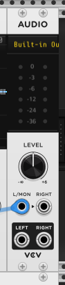
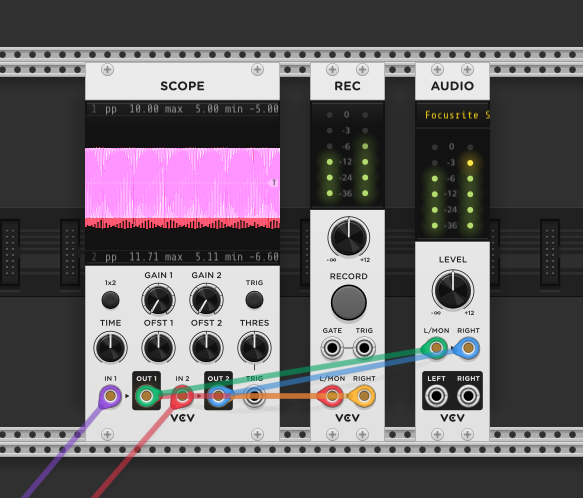
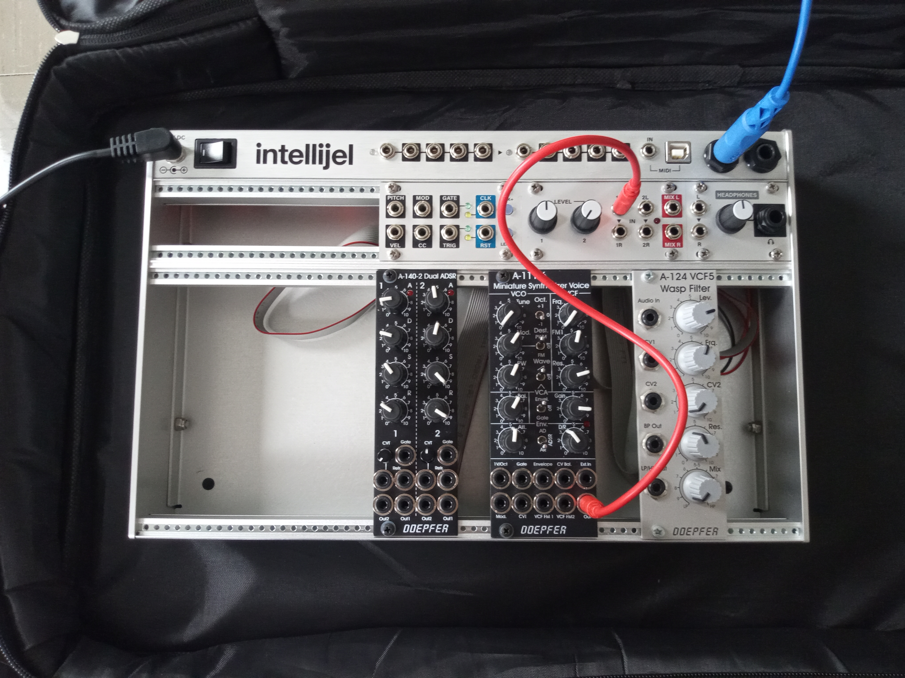
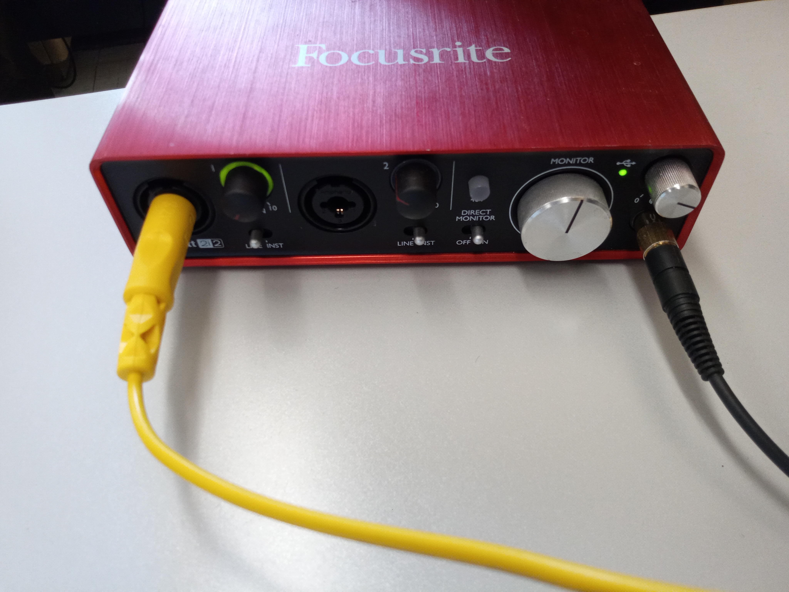
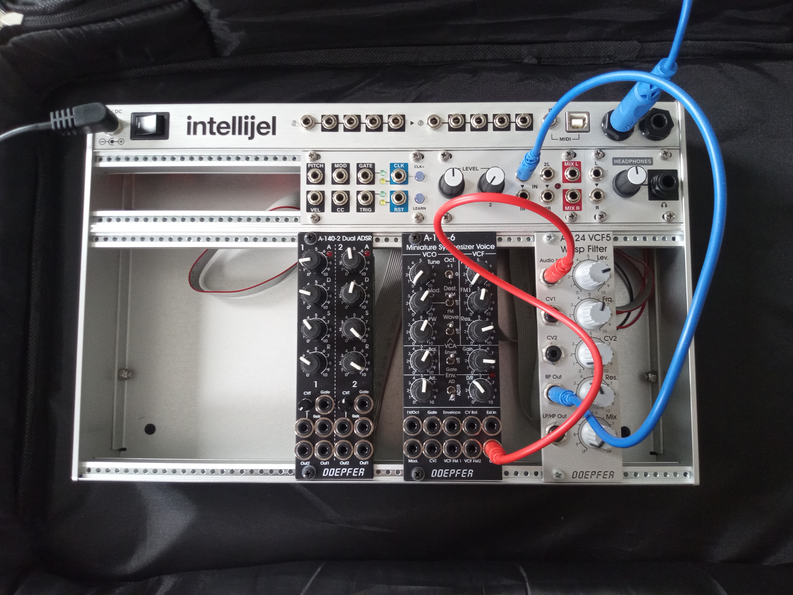
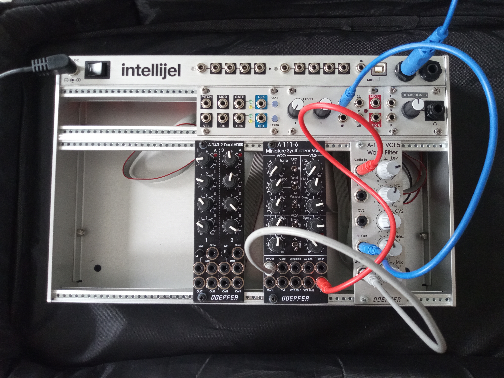

MEDIAART 2G03: Practice #7
**Practice #7: use multiple techniques to create and record original synthesized sounds **
Tutorial Goal: create and record original synthesized sounds using virtual/software modular synthesis
Purpose: There are many different ways to "do" sound synthesis, and exploring each of them (a) will give us each insight into possible pathways for using synthesis as part of the Transformation requirement in this course and (b) will help us to think (collectively) about the differences and similarities between these different ways of doing sound synthesis.
Specifications: You will receive credit for a tutorial/practice submission in this folder that meets ALL of the following specifications (more detailed instructions are found below):
- The submission contains a ZIP archive containing two WAV files (not source files, not a Reaper project folder or file)
- One WAV file demonstrates recording synthesized sounds created with VCV Rack.
- The other WAV file demonstrates recording synthesized sounds made with the Media Arts program's modular synthesis kits.
In most cases, the most efficient way to complete this will be during your assigned tutorial section. Don't hesitate to ask the instructor or teaching assistant for help if anything is unclear to you - but also don't hesitate to explore the software, try things out, and teach yourself! It would be a pretty good idea to do the reading and watch the videos for practice #7 ahead of your tutorial session too.
Making synthesized sounds using VCV Rack
-
If you prefer to work on your own computer, download and install the free and open-source software VCV Rack (Rack 2 Free) on to your own computer. It is also already available on the Media Arts wing computers. VCV Rack is software for simulating modular synthesis in software - the same software that was used in the online modules about this topic. Those online modules explain in more detail how this stuff works - our goal in the tutorial is just to take the first step. It's available here: https://vcvrack.com/Rack scroll down to where it says Rack 2 Free and provides download button for Windows, MacOS and Linux (or just use the wing computers).
-
The installed software will just be called "Rack". You'll see a default project (usually called a "patch") that has a bunch of modules connected by brightly coloured "patch cables". The default patch is set to make sounds when you press keys on the keyboard but for it to work you have to select an appropriate audio output on the module labelled "Audio". Click where it says "No Device" to pick a suitable audio output from your system. Then press keys on the keyboard to see if it orks (ask your TA for assistance in troubleshooting if you can't get it to make a sound).

-
Now spend ~10 minutes experimenting with modifying the sounds produced. At first you might experiment with changing the settings of dials and other graphical user interface elements. Then you might try making or changing connections between things. You can add other synthesis elements by right clicking to pick new modules, or delete modules by right clicking on them and selecting "Delete". Make some changes and see what you come up with. (Important note: the Transformation requirement of the course requires that you experiment with making your own synthesis algorithms - so it is important to add new modules, change connections, play around in a deep way, etc to engage with that requirement).
-
To record from VCV Rack: By far, the easiest way to record results from VCV Rack for use elsewhere (e.g. in a Reaper project) is to install and use a recording module within VCV Rack. Here are instructions for how you would do that:
4a. Make a vcvrack.com account and log in to it (on the web) here: https://vcvrack.com/login
4b. Once you are logged in click on "Library" (on the vcvrack.com website) and search for "Recorder". One of the results will be a plugin called "VCV Recorder". Click where it says "Add" to add the VCV Recorder to your "library" of modules. You can close the website after that.
4c. Back in the VCV Rack software: On the Library menu in the software (not the website) enter your username and password to log in. After a moment, the option to "Update all" should appear on the menu - activate it when it does. After that, Rack will warn you that it is going to restart - let it.
4d. After the restart, you will now have access to a module called "REC" in VCV Rack, that can be used to record any mono (1 channel) or stereo (2 channel) signal. Typically you'll want to have a setup that lets you send signals both to the computer's audio output (to listen to) and to the recorder (to record). It's also useful to have a "scope" that visualizes the outputs you are listening to / recording. Below is an image of what that setup might look like - with such a setup you can send your signals to the scope, and from there they'll get to the audio output and recorder. Note that you can make two patch cables from a single point/module output by right clicking, selecting "Create cable on top" and then clicking and dragging to where you want the new cable to go to. Here's the recommended setup:

Making synthesized sounds using the modular synthesis kits
Analog modular synthesis hardware is a way of doing synthesis that is very physically engaging / engages our bodies in different ways than the typical interface of software of computers, and each analog module (even supposedly identical ones) is different than every other one, which can analog modular synthesis a slightly unpredictable, chaotic, mysterious character. It's kind of expensive, though, so it's a good thing some hardware to experiment with is available to students in this course through the Media Arts equipment bank and Humanities Media and Computing!
-
Get one of the analog modular synthesis kits. Plug it in using the provided power adapter and turn it on (if you look inside it you should be able to see some little red LEDs if the power is on).
-
On the module labelled A-111-6 Miniature Synthesizer Voice, connect a "patch cable" (the tiny thin cables with 1/8" tip-ring connectors on the ends) to the hole/connected labelled "Out". Connect the other end of that same cable to the hole labelled "1L" (1st left input) on the kit's output module (hint: it has two dials on it labelled "Level"). In this way, the signal from the A-111-6 (a kind of oscillator with lots of options/controls) will arrive at the 1/4" output connections on the top right of the kit. That would look something like this:

- Get one of the Focusrite Scarlett audio interfaces and connect it via the provided USB cable to a computer on which you are running Reaper. Make sure the phantom power (48V) is OFF on the audio interface (not lit up, press it to turn it off if it is lit up). Now connect a 1/4" cable (the larger audio cables in the kit) from the left output of the analog synthesis kit to the 1st channel of input on the front of the Focusrite Scarlett audio interface. You'll probably want to turn the gain (preamplifier) dial on that 1st channel of the interface down to its lowest setting. Near the same place, there is switch that says "Line/Inst" - set it to Line. Connect the studio-grade headphones you bought for the course - via a 1/4" adapter if necessary - to the headphone output on the audio interface. That would probably look something like this:

-
At this point, if you set "Direct Monitor" to On, you'll be able to listen by plugging headphones directly into the audio interface. You should be able to hear synthesized sound by turning up the Level controls on the synthesis kit, and turning up the headphone volume on the audio interface, even before doing any recording stuff in Reaper. The "Gain" control on the A111-6 synthesizer voice module needs to be up, and so does the left Level control on the output module. Play with it a while (play with lots of different knobs and controls on the A111-6) and see what you can come up with!
-
As a next step, let's add the "Wasp filter" module. Take the cable going from the output of the A111-6 and instead of sending it to the kit's output, send it to the input of the Wasp filter. And then, using a new patch cable, connect one of the two outputs (LP/HP or BP) of the filter to the kit's output. That would look like this - play with both modules together for a while:

- As a third basic exploration, let's make some "weird feedback". Using a new patch cable, connect the other output of the filter (whichever of LP/HP or BP you did not use in the previous step) to 1V/OCT input of the synthesizer voice. The audio output of the filter will now be affecting the frequency of the synthesizer voice that is feeding the filter, in a feedback loop, and the results will be very unpredictable depending on where you have all the dials. That would look like this - play with it for a while!:

- Setting up Reaper to record from the analog synthesis kit + Focusrite audio interface: Select the Focusrite Scarlett interface in Reaper's Preferences/Settings, under Audio: Device. Make a new track with Track: Insert New Track. Record arm it by clicking on the big red button on the track. Right next that button (when armed) is a button that looks like a speaker that controls Record Monitoring (whether Reaper also outputs the signal it is recording, in real-time). This is another way to listen to your synthesis signal if you have an interface that doesn't have Direct Monitor (or doesn't have it turned on). It's preferable to use direct monitor (no latency or delay in the signal) so let's turn Record Monitoring off by clicking on that speaker-like icon until it is kind of darker (just an outline). You should see levels dancing (or at least there) on the metres of the new track, once it is record armed. All you have to do to record is hit the big record button (near the play button)!
When you press the stop button, Reaper will ask if you want to keep all of the files. Usually the answer is Yes! (Save All). That's it!
When you have some interesting analog modular synthesis sounds recorded into Reaper (using whatever methods make sense to you), you are ready to render, ZIP, and submit the ZIP file to a weekly submission folder for this course.